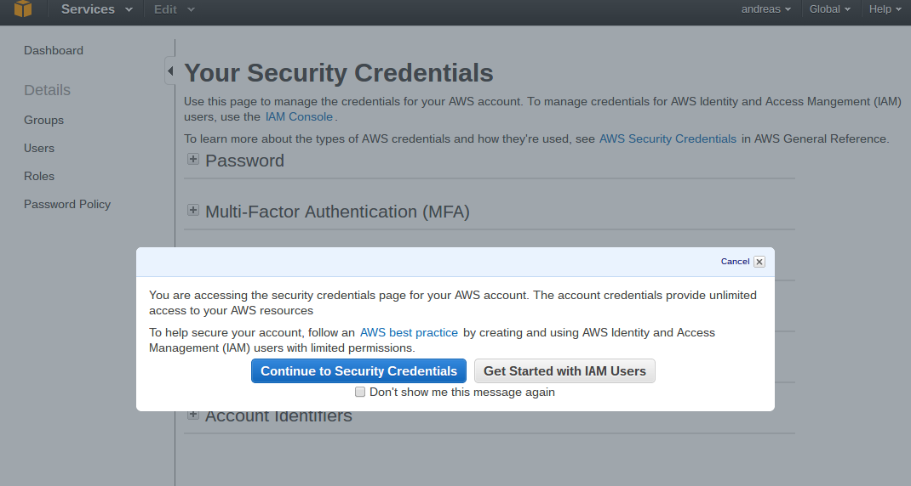
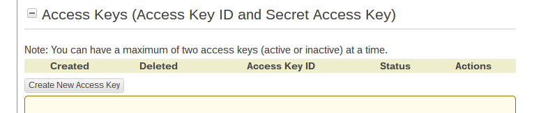
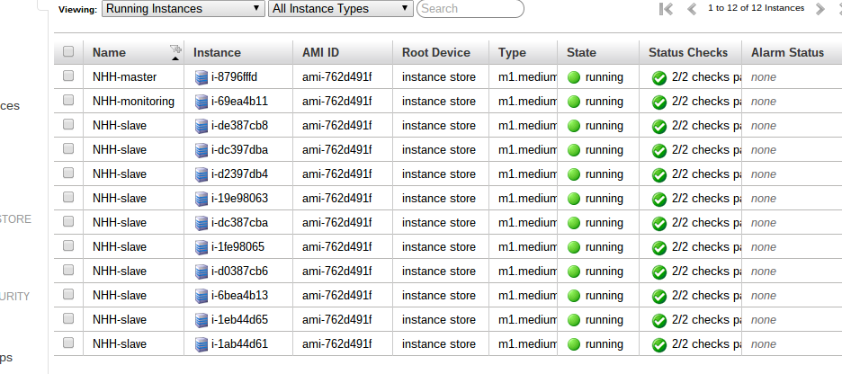
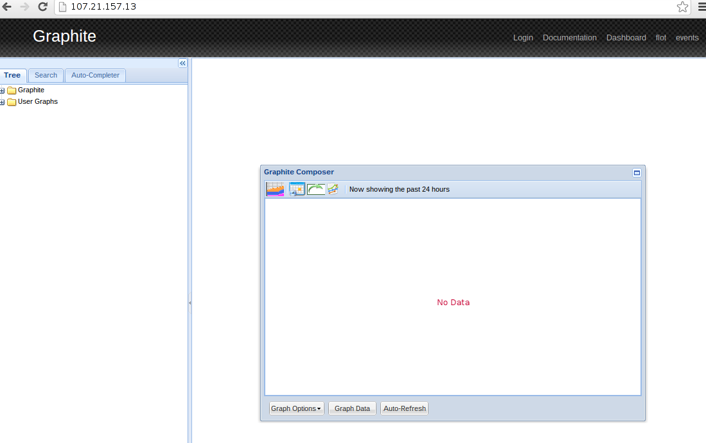
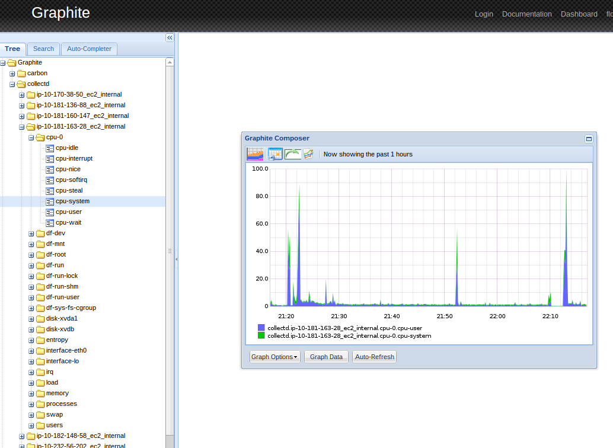

No-headache-hadoop
Super simple hadoop setup
View the Project on GitHub andreasjansson/no-headache-hadoop
Introduction
This is a tutorial that describes a way to quickly setup a Hadoop cluster on cheap Amazon EC2 spot instances. We then show how to interact with the cluster by writing and running a few example Hadoop streaming jobs in Python.
Initial setup
For this tutorial I assume basic UNIX command line knowledge (if you know what a pipe is you'll be fine). All the code has been written and tested on Linux, but I'd imagine it would work on OSX and maybe even Cygwin.
The code I use is written in Python, so you'll need to make sure you have Python 2.7 installed. You'll also need pip (recommended) or easy_install to download Python packages.
Download headintheclouds:
pip install headintheclouds
Download no-headache-hadoop:
git clone https://github.com/andreasjansson/no-headache-hadoop.git
(If you don't have git installed, you can download the zip archive: https://github.com/andreasjansson/no-headache-hadoop/archive/master.zip)
Next, we need to create an AWS account. Go to https://aws.amazon.com/ and click Sign Up. You'll be asked for address, phone number, credit card details, etc. When you've finished signing up, go to https://console.aws.amazon.com/iam/home?#security_credential

Click Continue to Security Credentials. Under Access Keys, click Create New Access Key.

Click Download Key File and store the rootkey.csv file somewhere secure.
Next, go to https://console.aws.amazon.com/ and click EC2. In the top right corner, change the region to US East (N. Virginia).

Under Network & Security, click Key Pairs. Click Create Key Pair and give it a name. When you click Create you'll download a .pem key file, move that file somewhere secure. You'll also need to remove the write permissions on this file, e.g.
chmod 400 andreas-ec2.pem
Finally, we need to set a few environment variables:
- Set
AWS_ACCESS_KEY_IDto the AWSAccessKeyId from rootkey.csv - Set
AWS_SECRET_ACCESS_KEYto the AWSSecretKey from rootkey.csv - Set
AWS_SSH_KEY_FILENAMEto the full path to the .pem key file, e.g. /home/andreas/secrets/andreas-ec2.pem - Set
AWS_KEYPAIR_NAMEto the name of the key pair, e.g. andreas-ec2
You might want to place the exports in .bashrc, .profile, or equivalent:
export AWS_ACCESS_KEY_ID=AKIJFKELJF98FNDNTHWQ
export AWS_SECRET_ACCESS_KEY=9FYZlblKV3sl/7QblWbVcSQeavN64+iiyvAoXoJI
export AWS_SSH_KEY_FILENAME=/home/andreas/secrets/andreas-ec2.pem
export AWS_KEYPAIR_NAME=andreas-ec2
To confirm that everything is working, cd to the no-headache-hadoop directory and type fab debug_ec2 in the terminal.
Launching nodes
The real killer feature in AWS (at least for students and poorly funded academics) is their spot instance offering. To run EC2, Amazon needs a lot of excess capacity. Instead of letting all that hardware sit idle, they allow people to bid on unused instances. The hourly asking price is set based on supply and demand and changes frequently. If your bid exceeds the asking price, the instances you asked for will be launched. But if the asking price increases above your bid, all instances will be terminated immediately (and you will not be charged for the partial hour). Fortunately, Hadoop offers ways to deal with this.
To see the current spot pricing, type fab pricing. The output looks something like:
AMAZON EC2:
size compute_units memory recent median stddev max hourly_cost
t1.micro 2 0.6 0.013 0.010 0.005 0.020 0.020
m1.small 1 1.7 0.007 0.007 0.000 0.007 0.060
m1.medium 2 3.75 0.013 0.013 0.000 0.013 0.120
c1.medium 5 1.7 0.018 0.020 0.003 0.024 0.145
m1.large 4 7.5 0.030 0.060 0.148 0.500 0.240
m2.xlarge 6.5 17.1 0.035 0.160 0.186 0.447 0.410
m1.xlarge 8 15 0.052 0.054 0.020 0.200 0.480
m3.xlarge 13 15 0.058 0.058 0.000 0.058 0.500
c1.xlarge 20 7 0.070 0.070 0.000 0.070 0.580
m2.2xlarge 13 34.2 0.070 0.070 0.000 0.070 0.820
m3.2xlarge 26 30 0.115 0.115 0.040 0.200 1.000
cc1.4xlarge 33.5 23 1.668 1.668 0.000 1.668 1.300
m2.4xlarge 26 68.4 0.400 0.280 0.545 1.800 1.640
cg1.4xlarge 33.5 22 2.100 2.100 0.775 2.100 2.100
cc2.8xlarge 88 60.5 0.270 0.270 0.000 0.270 2.400
cr1.8xlarge 88 244.0 0.343 0.343 0.083 0.510 3.500
recent is the most recent spot price, median, stddev and max show the spot pricing over the past 24 hours. hourly_cost is the normal pay-as-you-go pricing. Looking at this table we see that spot instances are almost 10 times cheaper than normal instances.
To create new EC2 spot instances, type
fab ec2.spot:ROLE,SIZE,PRICE,COUNT
where ROLE is a name we give the node, e.g. "slave"; SIZE is the instance size, e.g. "cc2.8xlarge"; PRICE is our bid, e.g. 0.28; COUNT is the number of nodes we want to launch (default 1).
To create normal ec2 instances, type
fab ec2.create:ROLE,SIZE,COUNT
For this tutorial we'll create 10 worker nodes (slaves), one master, and one monitoring server. To keep costs down we'll make them all m1.medium instances with 3.75 GB memory and 2 compute units. Currently, the price is $0.013/hour, and it's been constant for the past 24 hours, so it's probably safe to bid $0.015 (we'll only pay the asking price, even if our bid is higher).
fab ec2.spot:master,m1.medium,0.015 &
fab ec2.spot:monitoring,m1.medium,0.015 &
fab ec2.spot:slave,m1.medium,0.015,10 &
The ampersands at the end runs the command in the background so we create the instances in parallel.
Side note: For new users, Amazon limits the number of instances to 20. You probably want to increase that to at least 50, using the form at https://aws.amazon.com/contact-us/ec2-request/
Once the requests have been fulfilled, we can type
fab nodes
which will list all instances managed by no-headache-hadoop, something like this:
name size ip_address private_dns_name status launch_time
slave m1.medium 23.20.2.145 ip-10-181-136-88.ec2.internal running 2013-09-21 20:13:48+01:00
slave m1.medium 50.17.24.121 ip-10-170-38-50.ec2.internal running 2013-09-21 20:13:48+01:00
slave m1.medium 107.22.106.11 ip-10-235-2-238.ec2.internal running 2013-09-21 20:13:48+01:00
slave m1.medium 54.211.124.93 ip-10-234-1-231.ec2.internal running 2013-09-21 20:05:42+01:00
slave m1.medium 54.221.146.1 ip-10-235-8-110.ec2.internal running 2013-09-21 20:05:42+01:00
master m1.medium 54.211.179.136 ip-10-181-163-28.ec2.internal running 2013-09-21 20:05:42+01:00
slave m1.medium 54.225.32.220 ip-10-28-108-156.ec2.internal running 2013-09-21 20:13:48+01:00
slave m1.medium 107.21.169.191 ip-10-181-160-147.ec2.internal running 2013-09-21 20:13:48+01:00
monitoring m1.medium 107.21.157.13 ip-10-232-69-149.ec2.internal running 2013-09-21 20:05:42+01:00
slave m1.medium 54.227.31.220 ip-10-232-56-202.ec2.internal running 2013-09-21 20:05:42+01:00
slave m1.medium 23.20.135.126 ip-10-235-32-78.ec2.internal running 2013-09-21 20:13:48+01:00
slave m1.medium 75.101.206.231 ip-10-182-148-58.ec2.internal running 2013-09-21 20:13:48+01:00
If you go to the web console at https://console.aws.amazon.com/ec2 you should see all instance names prefixed by "NHH-". (If not, something has gone wrong and you should terminate those instances through the web interface to avoid wasting money.)

When we're done with our instances we must remember to terminate them using fab terminate.
In order to access the servers we need to open up the EC2 firewall on the SSH port (22). We do that by typing
fab ec2.firewall:open=22
While we're at it, let's open some other ports we'll use later on:
fab ec2.firewall:open=80
fab ec2.firewall:open=443
fab ec2.firewall:open=50030
fab ec2.firewall:open=50060
Installing the software
In the no-headache-hadoop repository, there is a folder called "puppet". It contains all the puppet manifests needed to install and configure Hadoop.
To install Hadoop on the servers we launched in the previous section, type
fab build
This command will SSH into each of the servers in parallel, and install all the required software automatically. Expect this to take a few minutes and don't be surprised if some instances take much longer than others to finish installing. If it appears to hang, you can kill the script (Ctrl-C) and try again.
Hadoop overview
Before we move on to the example, it's probably good to look at what Hadoop actually is. This will just be a short overview, for a longer introduction to Hadoop, see http://developer.yahoo.com/hadoop/tutorial/.
At the core of Hadoop is the Hadoop Distributed File System (HDFS), a fault-tolerant, scalable file system optimised for few writes, many reads, and large files. Files are stored in 64MB blocks across multiple data nodes, with each block stored in several (3 by default) copies for redundancy. The name node keeps an index of which block belonging to which file is stored on which server.
The input to a Hadoop job is usually one or a few very large tab-separated files that are processed sequentially, line by line. The job tracker splits and distributes the input to many task tracker servers. The job tracker manages everything around the execution of jobs, e.g. taking failed task trackers out of the pool, combining results, etc.
A Hadoop job usually has two stages: map and reduce. The mapper transforms each input record to one (or sometimes more than one) intermediate record, in the format (key, output). These intermediates are then grouped by key, sorted, and fed to the reducer, that combines them into a single (or a few) outputs.
In our setup we run the name node and job tracker on the same master instance, and each slave runs both a data node and a task tracker. This is deliberate, the job tracker actually attempts to schedule tasks to the same machine that stores the data it will operate on.
Before we can start the cluster we need to format HDFS
fab format
Now we can start the cluster using
fab start
Hadoop streaming
Hadoop is written in Java, and you used to have to write map/reduce jobs in Java too. Fortunately, nowadays Hadoop has a tool called Hadoop streaming that allows you to write Hadoop jobs in virtually any language. The streaming job reads input lines from stdin, processes the input, and writes the output to stdout.
A nice side effect of this is that we can test streaming jobs locally on the command line before we run them on the cluster:
cat input | ./mapper | sort | ./reducer
Monitoring servers
The monitoring server we created earlier is running Graphite, and the master and slave nodes all send it system stats using collectd.
The output of fab nodes gives us the external IP for each server. In the example above, the monitoring server is at 107.21.157.13. If enter that in a browser, we get something that looks like this:

In the pane on the left we can navigate Graphite -> collectd -> [server private DNS name] -> [metric group] -> [metric name].

The most important metric to keep an eye on is memory -> memory-used. Once that starts climbing towards 3GB, we are in trouble.
Example application
Now that we have our cluster built and configured, we can start doing some actual work on it. In this example we'll mine frequent itemsets of artists in the lastfm360k dataset, using a parallel version of FP-growth.
Algorithm overview
In frequent itemset mining we aim to find subsets of items that occur in many transations. The classic example is market basket analysis, where we want to find products that are frequently bought together. In this example we want to find sets of artists that occur in many people's Last.fm listening histories.
We will use a version of the FP-growth algorithm that was designed as a set of map/reduce jobs.
First we split the dataset up into a number of "history" shards that will be processed in parallel. Then we count the number of occurrences of each artist. The individual artists are then grouped into artist shards. The history shards are processed in parallel, and a new data file is created containing (history artists, artist shard) tuples. Each history is output once for every artist shard in that history.
For example, if the artists are
{A, B, C, D}
artist shards are
{A => 1, B => 1, C => 2, D => 2}
and histories are
{{A, B}, {A, B, C}, {B, D}, {C, D}}
The output will be
({A, B}, 1)
({A, B, C}, 1)
({A, B, C}, 2)
({B, D}, 1)
({B, D}, 2)
({C, D}, 2)
The clever thing is that the history tuples can mined for frequent itemsets in parallel, since each artist shard has all of the transactions that artist appears in. The speedup is almost linear with the number of added servers.
The actual mining is done using traditional FP-growth. Finally, the results are deduplicated.
To download the code we will use in the example:
git clone git@github.com:andreasjansson/parallel-frequent-itemset-mining-lastfm360k.git
The code consists of a number of Hadoop jobs that each have a mapper.py and a reducer.py.
Downloading the dataset
The dataset is over 500MB, so to save time and bandwidth we'll download it straight from Amazon. We do that by logging in to the master node:
fab -R master ssh
The -R tells fabric to only apply the command to nodes with a certain role, in this case master.
To do anything Hadoop-related on the server, we need to change user to hadoop:
sudo su - hadoop
Once we're logged in we download and unpack the data using
wget http://mtg.upf.edu/static/datasets/last.fm/lastfm-dataset-360K.tar.gz
tar xzvf lastfm-dataset-360K.tar.gz
The files are in tsv format so we can import them straight into HDFS. We will use usersha1-artmbid-artname-plays.tsv which has 1.7 million records, where a record consists of (user id, artist id, artist name, play count). If we look at the first few records we get an idea of what we're dealing with.
head -n5 lastfm-dataset-360K/usersha1-artmbid-artname-plays.tsv
outputs
00000c289a1829a808ac09c00daf10bc3c4e223b 3bd73256-3905-4f3a-97e2-8b341527f805 betty blowtorch 2137
00000c289a1829a808ac09c00daf10bc3c4e223b f2fb0ff0-5679-42ec-a55c-15109ce6e320 die Ärzte 1099
00000c289a1829a808ac09c00daf10bc3c4e223b b3ae82c2-e60b-4551-a76d-6620f1b456aa melissa etheridge 897
00000c289a1829a808ac09c00daf10bc3c4e223b 3d6bbeb7-f90e-4d10-b440-e153c0d10b53 elvenking 717
00000c289a1829a808ac09c00daf10bc3c4e223b bbd2ffd7-17f4-4506-8572-c1ea58c3f9a8 juliette & the licks 706
To import into HDFS, type
hadoop dfs -copyFromLocal lastfm-dataset-360K/usersha1-artmbid-artname-plays.tsv /hadoop/lastfm-plays.tsv
This will copy the file to /hadoop/lastfm-plays.tsv in HDFS. We can browse HDFS using
hadoop dfs -ls /
hadoop dfs -ls /hadoop
# etc.
Preprocessing
As a first step we transform the data so that each line is in the format (user id, list of artists). The mapper simply takes the input line and outputs (user id, artist name). The reducer then reads the input lines that have been sorted in Hadoop streaming by user id, and keeps the artists in memory. When the user id changes or we reach the end of the file, we output the old user id along with all the artists we've collected. Note that this would not work if the records hadn't been sorted before the reduce step.
If we have downloaded the data to our local computer as well as to the master node, we can test the job locally:
head -n1000 /path/to/lastfm-dataset-360K/usersha1-artmbid-artname-plays.tsv \
| /path/to/pfp_lastfm360k/preprocess/mapper.py \
| sort \
| /path/to/pfp_lastfm360k/preprocess/reducer.py
Where to go from here
for no-headache-hadoop, install new software through puppet (especially python libs), etc.